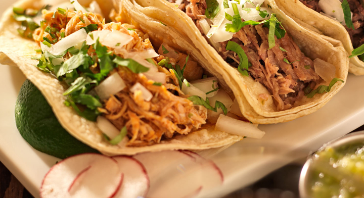
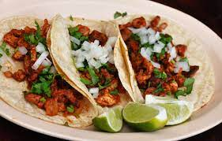
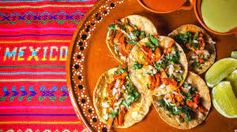

Descripción de los tacos:
Los tacos consisten en una tortilla de maíz o harina, que generalmente se dobla por la mitad para sostener un relleno sabroso. El relleno puede variar ampliamente, y esta es una de las razones por las que los tacos son tan versátiles y populares. Algunos de los rellenos más comunes incluyen carne asada, carnitas, pollo, pescado, chorizo, al pastor, barbacoa, chicharrón, nopales (cactus), entre otros. También se pueden encontrar opciones vegetarianas y veganas, como los tacos de frijoles, hongos o soja texturizada.
Los tacos se suelen acompañar de una variedad de ingredientes adicionales, como cebolla, cilantro, salsa, guacamole, crema agria, queso, limón y rábanos. La elección de ingredientes y salsas puede variar según la región de México y las preferencias personales.

Historia de los tacos:
La historia de los tacos se remonta a la época precolombina en México, mucho antes de la llegada de los españoles. En ese entonces, los habitantes de Mesoamérica ya consumían tortillas de maíz, que eran una parte fundamental de su dieta. Estas tortillas se utilizaban como vehículo para diversos alimentos, como guisos, carnes y verduras.
La palabra "taco" se originó en el siglo XVIII y se cree que proviene de la palabra náhuatl "tlahco", que significa "mitad" o "en el medio". Esta palabra se usó para describir cómo se doblaban las tortillas para envolver los ingredientes en su interior.

Misión de los Tacos:
"Nuestra misión es deleitar a los amantes de la comida alrededor del mundo con la autenticidad y la diversidad de la cocina mexicana a través de los tacos. Nos esforzamos por ofrecer tacos frescos y deliciosos, preparados con ingredientes de la más alta calidad, manteniendo viva la tradición culinaria mexicana y celebrando la cultura que los rodea. Buscamos compartir la alegría y la pasión por los sabores únicos que solo los tacos pueden brindar."
Visión de los Tacos:
"Nuestra visión es convertirnos en el referente global de la excelencia en tacos, siendo reconocidos por la calidad, la innovación y la autenticidad de nuestros platillos. Queremos llevar la experiencia de los tacos a todos los rincones del mundo, celebrando la riqueza de la gastronomía mexicana y contribuyendo a la diversidad culinaria global. Visualizamos un futuro donde los tacos sean apreciados como un símbolo de la unión de culturas y el amor por la buena comida."
